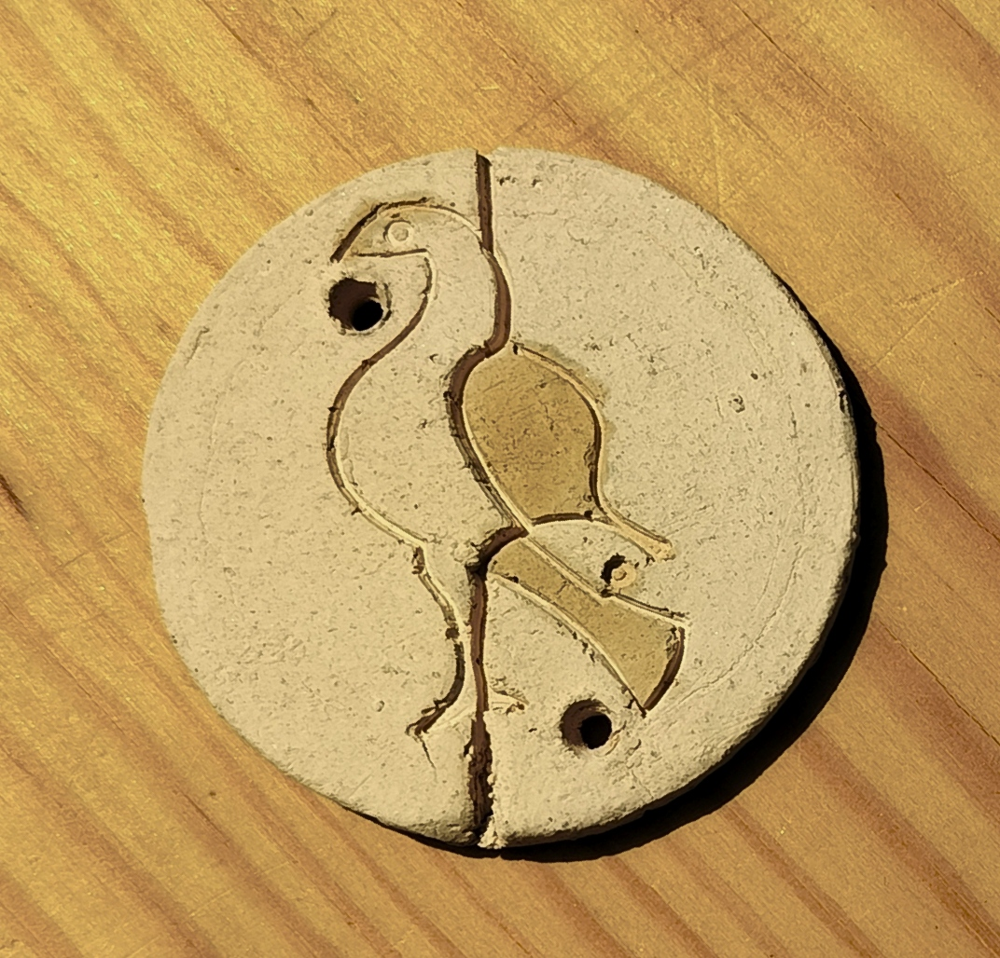
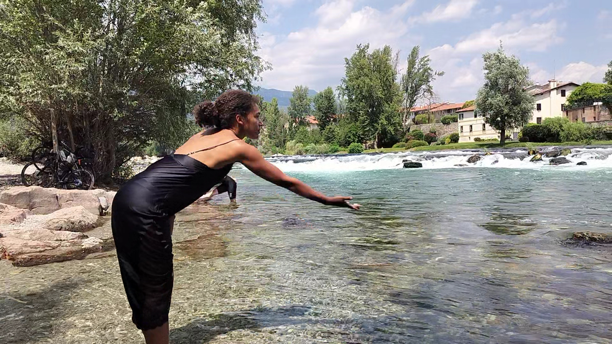
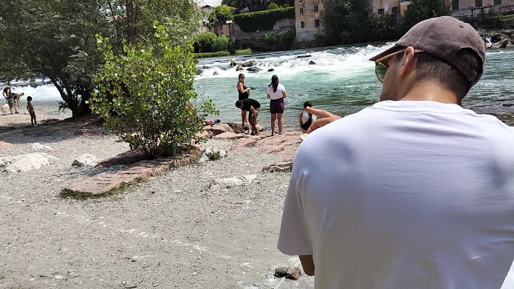
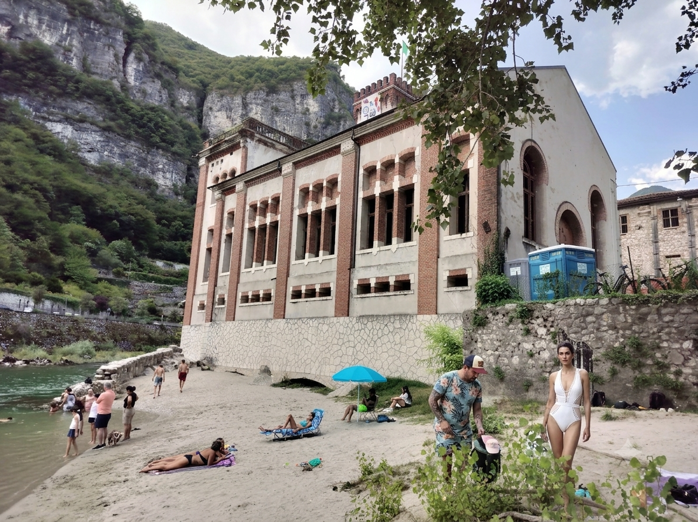

A living place-based practice
See the place differently. See yourself differently.
Let your body play with an architecture of clay, fire, water and sky, and cross the invisible thresholds hidden within the familiar.
Reitia Protocol is the North-East Italian expression of SIX — Super Insider eXperience, a place-based framework developed through public events, embodied practice, cultural research and temporary architectural interventions.
Two public editions have already taken place on the Brenta River in Bassano del Grappa. The next edition is now taking shape in Carpanè, Valbrenta.
See the place differently → see yourself differently → leave a trace → carry one with you.
Reitia Protocol II — Brenta River, 2026
At Reitia Protocol II, participants gathered local clay, worked around a pit kiln on the riverbank, moulded and personalised ceramic objects, and crossed a physical threshold in the Brenta. During the immersion, the object was broken in two: one half was cast into the river; the other was kept.



How it unfolds
Earth — participants collect material from the place and shape a recurring object for someone they do not know.
Fire — the exploration of the site becomes a forge: people, activities, familiar landmarks and contradictions made invisible by habit are brought into relation, station by station.
Water — each participant receives an object made by a stranger, personalises it and breaks it: half is given back to the place, half is kept.
Architecture as a device of attention
REITIA does not use architecture as a backdrop. Temporary, site-specific architectural interventions make relationships within a place perceptible: alignments, thresholds, tensions and connections that familiarity has made difficult to see.
At REITIA II, a temporary riverside exedra made of stones acted as a kind of sextant of meaning, bringing architecture, landscape and ritual into a single spatial experience. The intervention disappeared; the newly perceived relationships remained.

Current development — Carpanè

The next REITIA development is taking shape at Carpanè, around the abandoned Guarnieri hydroelectric power station and the river beach at its feet.
Industrial memory, the 1966 flood, present-day leisure, local cultural activity and the physical experience of the river are brought into relation around a recurring REITIA question:
What do we stop seeing simply because we have become used to seeing it?
Background reading
REITIA grew from a longer investigation into body, place, cultural memory, thresholds and the narratives through which familiar environments become almost invisible to us.
- The Evidence of Body — Bassano News, 2024
- Stockholm Between Stereotypes and Authenticity — Bassano News, 2025
About SIX / REITIA
SIX — Super Insider eXperience is a transdisciplinary framework exploring embodied heritage, participatory practice, architecture and place-responsive cultural processes across contemporary Europe.
REITIA is its implementation in North-East Italy. Through ritual, environmental immersion, material practice and cultural stratification, it investigates how landscapes and their inherited narratives can actively participate in transformation.
Current initiatives
- REITIA — Brenta River / Carpanè
- SIX — Super Insider eXperience
- Stockholm ICEbrrreakers
- Large Feeling Model
- H&ART / KreativEU
- Artistic research and cross-sector collaborations
Collaborations
Current work connects artists, researchers, craftspeople, local knowledge holders, communities, media and organisations across Sweden and Italy, with European development through the KreativEU network.
Contact
Email: info@reitia.org